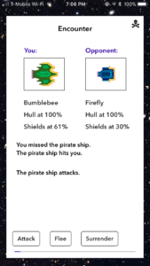

Space Trader: Encounters
Feb 25, 2018
The series of encounters a player experiences during the journey from one system to another presented a considerable challenge, in the handling of control flow and information between view controllers and the data model. The encounters of a journey begin once the player has dropped out of hyperspace, on his final 20 clicks in to his destination planet. Each click represents an opportunity for an encounter.

The logic works as such:
- When the player presses the warp button, a local function in the WarpVC, after verifying that debts or fuel conditions don’t prevent his journey, calls the warp function in the Galaxy class
- Galaxy.warp() performs further verification, and then instantiates an instance of a Journey, within Galaxy, and calls its beginJourney() method
- A NSNotification tells the WarpVC to fire a segue to WarpViewVC, which is a blank starfield background against which encounter modals appear
- The journey.resumeJourney() method calls journey.executeClick(), which runs the logic to determine if an encounter is to happen this click, and if so, which one.
- When it is time for an encounter:
- When it is time for an encounter, journey.executeClick() instantiates an instance of the Encounter class, and calls its beginEncounter() method, which uses an NSNotification to tell WarpViewVC to fire a segue, launching the encounter modal itself, EncounterVC.
- EncounterVC contains imageViews, labels, and four buttons, which draw their content from the current Encounter instance. Buttons themselves take on the appropriate text, and if they are not needed, disappear. When the player selects his move and taps one of the buttons, a switch statement on its label calls the appropriate function in Encounter.
- Subsequent stages of the encounter (You fired! You missed! The pirate ship is still in pursuit!) happen within the same EncounterVC; no segue is fired. NSNotifications are used to redraw the screen, loading the updated text from the the current Encounter object, and redrawing the image overlays indicating hull and shield damage to both player and opponent ships.
- When the encounter concludes, an alert informs the player. Upon conclusion of an encounter, EncounterVC is pulled from the stack.
- When clicks remaining reaches zero, journey.completeJourney() resets the current planet within Galaxy, and uses an NSNotification to dismiss WarpViewVC, returning the player to the original tabViewController.